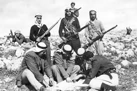
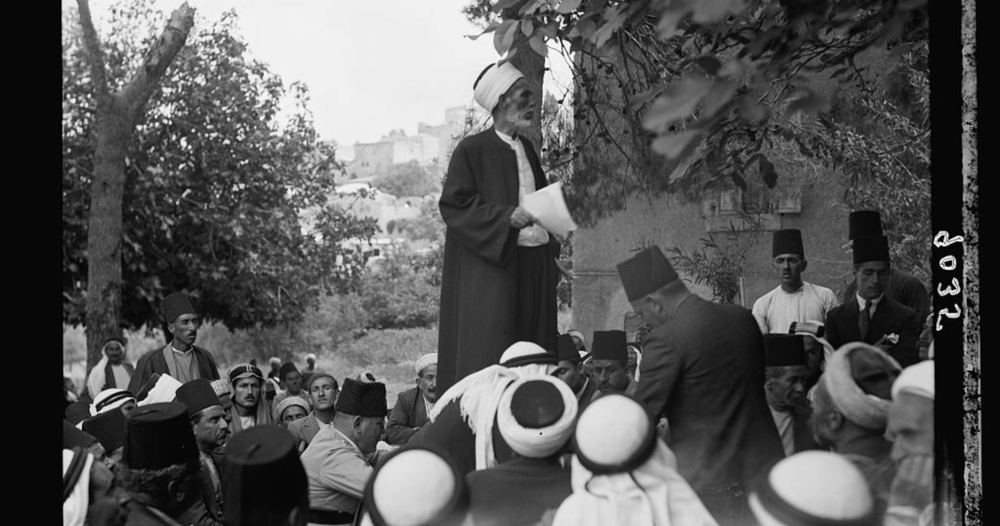
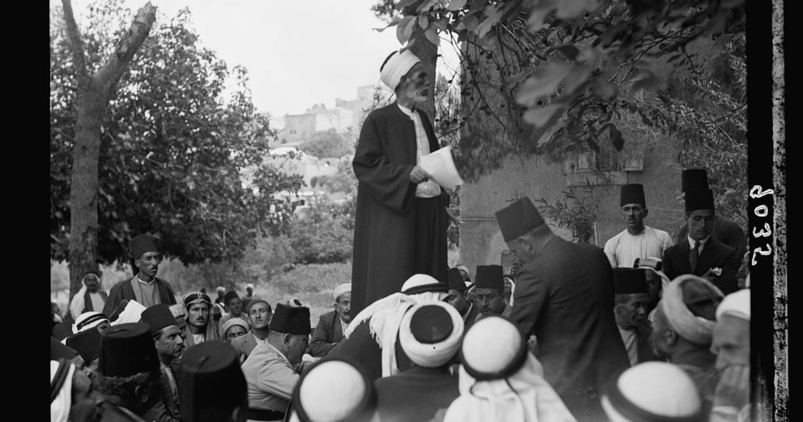
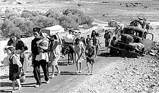
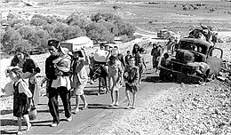

فلسطين
تعد قضية فلسطين واحدة من أطول وأعقد القضايا السياسية في التاريخ الحديث، حيث تجمع بين الجوانب السياسية والإنسانية والدينية. بدأت القضية الفلسطينية منذ نهاية القرن التاسع عشر مع ظهور الحركة الصهيونية التي سعت إلى إقامة وطن قومي لليهود في فلسطين، الأمر الذي أدى إلى صراع مستمر مع الشعب الفلسطيني، أصحاب الأرض الأصليين.
جذور القضية
يعود الصراع إلى بدايات الهجرة اليهودية إلى فلسطين خلال فترة الحكم العثماني، والتي تزايدت في فترة الانتداب البريطاني بعد الحرب العالمية الأولى. في عام 1917، أصدرت بريطانيا "وعد بلفور" الذي نص على دعم إنشاء "وطن قومي للشعب اليهودي" في فلسطين، مما أدى إلى توتر كبير بين الفلسطينيين والمستوطنين اليهود.
تقسيم فلسطين والنكبة
بعد انتهاء الانتداب البريطاني في عام 1947، اقترحت الأمم المتحدة تقسيم فلسطين إلى دولتين: دولة يهودية وأخرى عربية، مع إبقاء القدس تحت إدارة دولية. وافق اليهود على القرار، بينما رفضه العرب، معتبرين إياه غير عادل. في 1948، أعلنت دولة إسرائيل استقلالها، وهو ما أدى إلى اندلاع الحرب العربية الإسرائيلية الأولى. خلال هذه الحرب، تم تهجير مئات الآلاف من الفلسطينيين من ديارهم في ما يعرف بالنكبة.
الاحتلال الإسرائيلي
في عام 1967، خلال حرب الأيام الستة، احتلت إسرائيل الضفة الغربية وقطاع غزة والقدس الشرقية، بالإضافة إلى أجزاء أخرى من الأراضي العربية. هذا الاحتلال أدى إلى تفاقم الوضع وزيادة تعقيد الصراع. إسرائيل قامت ببناء المستوطنات في الأراضي المحتلة، الأمر الذي اعتبره الفلسطينيون والمجتمع الدولي عقبة أمام تحقيق السلام.
القضية في العصر الحديث
على مر العقود، بذلت العديد من الجهود الدولية للتوصل إلى حل للقضية الفلسطينية، بما في ذلك اتفاقيات أوسلو في التسعينيات التي فتحت الباب أمام إقامة دولة فلسطينية. لكن هذه الجهود لم تثمر بشكل كامل بسبب العديد من العوامل، بما في ذلك استمرار بناء المستوطنات والانقسامات السياسية الداخلية الفلسطينية.
الأبعاد الإنسانية
القضية الفلسطينية ليست مجرد نزاع سياسي، بل هي قضية إنسانية تتعلق بحقوق الشعب الفلسطيني في تقرير مصيره والعيش بكرامة على أرضه. يعاني الفلسطينيون في الضفة الغربية وقطاع غزة من ظروف معيشية صعبة، بما في ذلك القيود المفروضة على الحركة، الفقر، والحصار الإسرائيلي المستمر على غزة.
حل الدولتين
يظل حل الدولتين هو المقترح الأكثر تداولاً على الساحة الدولية، والذي ينص على إقامة دولة فلسطينية مستقلة تعيش جنبًا إلى جنب مع دولة إسرائيل بسلام. إلا أن العقبات الكبيرة أمام هذا الحل، مثل توسع المستوطنات واستمرار النزاع على القدس، تجعل تحقيقه صعباً في الوقت الحالي.
تاريخ الصهيونية في فلسطين
الحركة الصهيونية هي حركة سياسية تأسست في أواخر القرن التاسع عشر بهدف إنشاء وطن قومي لليهود في فلسطين، وقد جاءت كرد فعل على الاضطهاد الذي تعرض له اليهود في أوروبا. ومنذ نشأتها، لعبت الصهيونية دورًا محوريًا في تحويل الصراع على فلسطين إلى قضية دولية.
بدايات الصهيونية
تأسست الحركة الصهيونية في أواخر القرن التاسع عشر على يد ثيودور هرتزل، وهو صحفي نمساوي يهودي كتب كتابه الشهير "الدولة اليهودية" عام 1896. في هذا الكتاب، دعا هرتزل إلى إقامة وطن قومي لليهود في فلسطين كحل لمشكلة معاداة السامية والاضطهاد الذي واجهه اليهود في أوروبا الشرقية والغربية. في العام التالي، انعقد المؤتمر الصهيوني الأول في مدينة بازل، سويسرا، والذي اعتُبر نقطة تحول أساسية في تاريخ الحركة الصهيونية، حيث وضعت فيه الأسس العملية لتحقيق الهدف الصهيوني.
الهجرة اليهودية إلى فلسطين
بناءً على أهداف الحركة الصهيونية، بدأت موجات الهجرة اليهودية إلى فلسطين في أواخر القرن التاسع عشر، والتي تعرف بـ"علياه". كانت هذه الموجات الهجرية تتمركز في البداية على استيطان الأراضي الزراعية، حيث أنشأ المستوطنون اليهود مستعمرات زراعية عرفت بـ"الكيبوتس". بين عامي 1882 و1903، شهدت فلسطين أولى هذه الموجات، وكانت أعداد المهاجرين محدودة لكنها كانت تعتبر نواة للاستيطان الصهيوني المتزايد.
وعد بلفور
في عام 1917، خلال الحرب العالمية الأولى، أصدرت الحكومة البريطانية وعد بلفور، الذي كان عبارة عن خطاب موجه من وزير الخارجية البريطاني آرثر بلفور إلى اللورد روتشيلد، وهو أحد زعماء اليهود في بريطانيا. في هذا الوعد، أعلنت بريطانيا دعمها لإقامة "وطن قومي للشعب اليهودي" في فلسطين. هذا الوعد كان بمثابة اعتراف دولي بالحركة الصهيونية وأهدافها، واعتُبر من قبل الفلسطينيين بداية التدخل الدولي في شؤونهم وأراضيهم.
الانتداب البريطاني
بعد انتهاء الحرب العالمية الأولى وسقوط الدولة العثمانية، تم وضع فلسطين تحت الانتداب البريطاني وفقًا لقرار عصبة الأمم في عام 1920. خلال فترة الانتداب (1920-1948)، ساعدت السلطات البريطانية بشكل غير مباشر في تسهيل هجرة اليهود إلى فلسطين وتوسيع الاستيطان الصهيوني، وذلك وفقًا لوعد بلفور. تزايدت أعداد المهاجرين اليهود إلى فلسطين بشكل ملحوظ خلال هذه الفترة، ما أدى إلى زيادة التوتر بين اليهود والفلسطينيين العرب.
الصدامات مع الفلسطينيين
تزامنًا مع تزايد الهجرة اليهودية، بدأت الصدامات بين الفلسطينيين والمستوطنين اليهود، خاصة في العشرينيات والثلاثينيات من القرن العشرين. شهدت فلسطين انتفاضات فلسطينية ضد الوجود البريطاني واليهودي، أشهرها ثورة البراق عام 1929 والثورة العربية الكبرى بين عامي 1936 و1939. كانت هذه الانتفاضات تعبيرًا عن رفض الفلسطينيين للوجود الصهيوني المتزايد وسعيهم للحفاظ على أرضهم وهويتهم.
الحرب العالمية الثانية والمحرقة
خلال الحرب العالمية الثانية، تعرض اليهود في أوروبا إلى الهولوكوست، وهي حملة إبادة جماعية نفذتها ألمانيا النازية وأدت إلى مقتل حوالي ستة ملايين يهودي. بعد انتهاء الحرب، ازداد التعاطف الدولي مع اليهود وارتفعت الدعوات لدعم إقامة دولة يهودية في فلسطين. هذا الحدث كان له تأثير كبير على تسريع إقامة الدولة اليهودية وزيادة الضغط على بريطانيا والمجتمع الدولي لحل القضية اليهودية.
قرار تقسيم فلسطين
في عام 1947، اقترحت الأمم المتحدة خطة لتقسيم فلسطين إلى دولتين: دولة يهودية ودولة عربية، مع إبقاء القدس تحت إدارة دولية. وافقت الحركة الصهيونية على هذا القرار، حيث كان يضمن لهم إقامة دولة يهودية، بينما رفضه الفلسطينيون والدول العربية، معتبرين أن التقسيم غير عادل ويهضم حقوقهم التاريخية في فلسطين. أدى ذلك إلى اندلاع حرب 1948 بين الجيوش العربية والقوات الصهيونية، والتي انتهت بإعلان قيام دولة إسرائيل وتهجير مئات الآلاف من الفلسطينيين.
الصهيونية بعد إقامة إسرائيل
بعد إقامة دولة إسرائيل في 1948، تركزت الجهود الصهيونية على دعم الدولة الناشئة، وتأمين موجات جديدة من الهجرة اليهودية، والعمل على تعزيز القوة العسكرية والاقتصادية لإسرائيل. استمرت الحركة الصهيونية في التأثير على السياسة الإسرائيلية والدولية، ولا تزال تلعب دورًا رئيسيًا في تشكيل مواقف إسرائيل تجاه الصراع الفلسطيني والمفاوضات المتعلقة بالسلام.
صور انتهاكات للشعب الفلسطيني
 


الشهيد محمد الدره
استشهد الصبي محمد الدرة في 30 سبتمبر 2000 في قطاع غزة اليوم الثاني لانتفاضة الأقصى، وسط احتجاجات أخذت أصداء إعلامية واسعة،التقطت عدسة المصور الفرنسي شارل إندرلان مشهد اختباء جمال الدرة وولده محمد الدرة خلف برميل اسمنت أثناء إطلاق ناري بين الاحتلال والفلسطينيين ، كان الأب يشير لتوقف إطلاق النار ليرقد الولد على ساقي والده قتيلاً، بعد 59 دقيقة من البث الحي للحدث قال رئيس المكتب الفرنسي أن محمد الدرة ووالده كانا الهدف وتم قتل الصبي
تهجير الفلسطينين
وفقا لجهاز الإحصاء المركزي الفلسطيني (PEBS) وحتى عام 2023، بلغ عدد الفلسطينيين الموجودين في أراضي ما يُعرف اليوم بـ"دولة فلسطين"، أي في الضفة الغربية وغزة، 5.48 ملايين شخص، وهو ما يُشكِّل قرابة 38% من نسبة الفلسطينيين الذين بلغ عددهم 14.5 مليون شخص (1) حول العالم، ما يعني أن 62% من الفلسطينيين يعيشون خارج أراضيهم، وهو وضع يعود بشكل أساسي إلى الحدثين الأساسيين في تاريخ القضية الفلسطينية اللذين رسّما الواقع على الأرض اليوم؛ حرب عام 1948 (النكبة) وما تبعها من حملات تهجير قسري حتى عام 1949، وحرب الخامس من يونيو/حزيران عام 1967 (النكسة)
اعتمدت العصابات الصهيونية في عملية تهجيرها للفلسطينيين في عام 1948 بشكل أساسي على مجموعة من المجازر التي ارتكبتها بحق بعض القرى الفلسطينية، وحاولت من خلالها أن ترهب الفلسطينيين وتدفعهم إلى مغادرة أراضيهم، وهي حالة ساهمت فيها المذبحة بالتوازي مع البروباغندا التي ترافقت معها، وتُعَدُّ مذبحة دير ياسين النموذج الأساسي في هذا السياق، التي تعتبرها العديد من الدراسات حدثا مفصليا في تهجير الفلسطينيين عام 1948 (2)، واستمر الاحتلال بتهجير الفلسطينيين بوضوح إلى غاية منتصف الخمسينيات من القرن الماضي
لم تتوقف الهجرة الفلسطينية مع حرب 1967، فمع أنها كانت الحرب الكُبرى الأخيرة التي أطلقها الاحتلال لتوسيع أراضيه ونتج عنها تهجير واسع، فإنه لم يتوقف بعدها عن ممارسة سياسات قهرية وترحيلية رفعت من كلفة العيش المادية والمعنوية على الفلسطينيين في أراضيهم، مما ولّد حالة تهجير صامت وبطيء رصدها الجهاز المركزي للإحصاء الفلسطيني بالأرقام عام 2016 (6)، وهي سياسات شملت التضييق الاقتصادي، وهدم المنازل، والسيطرة على الأراضي، وتقييد الحركة، والاعتقالات، وتكثيف السياسات الأمنية، حيث دفعت هذه السياسات مجتمعة بكثير من الفلسطينيين، وخصوصا الشباب والنخب العاملة والمتعلمة، إلى البحث عن فرص في الخارج
تهجير اهل الطنطوره
في صباح يوم 22 مايو 1948، شنت القوات الإسرائيلية هجومًا واسع النطاق على قرية الطنطورة، وهي قرية فلسطينية تقع على الساحل الفلسطيني دمرت القوات الإسرائيلية القرية بالكامل، وطردت سكانها البالغ عددهم 1,200 نسمة، بما في ذلك النساء والأطفال.

 بعد إحتلالها ويظهر مُهاجرين يهود فيها. 1949.jpg)
 بعد إحتلالها ويظهر مُهاجرين يهود فيها. 1949.jpg)
 1949..jpg) 

كما اعتقلت القوات الإسرائيلية العديد من السكان، وقُتل بعضهم رميًا بالرصاص. كان تهجير أهل الطنطورة جزءًا من عملية تهجير واسعة النطاق قامت بها القوات الإسرائيلية ضد الفلسطينيين خلال حرب 1948. تم تهجير أكثر من 700,000 فلسطيني من منازلهم خلال الحرب، وشكلوا ما يقرب من نصف السكان الفلسطينيين في فلسطين يعتبر تهجير أهل الطنطورة من الجرائم ضد الإنسانية، ولا يزال ملفه مفتوحًا حتى اليوم
اقتحام المسجد الاقصي
وفقًا لمركز معلومات فلسطين، فقد اقتحمت قوات الاحتلال الإسرائيلي المسجد الأقصى أكثر من 300 مرة منذ عام 1967. وبحسب المركز، فقد بلغ عدد اقتحامات المسجد في عام 2023 وحده أكثر من 100 اقتحام. تشير تقارير أخرى إلى أن عدد اقتحامات المسجد الأقصى قد يكون أعلى من ذلك بكثير. فبحسب مركز القدس للدراسات السياسية والإستراتيجية، فقد اقتحمت قوات الاحتلال الإسرائيلي المسجد الأقصى أكثر من 1000 مرة منذ عام